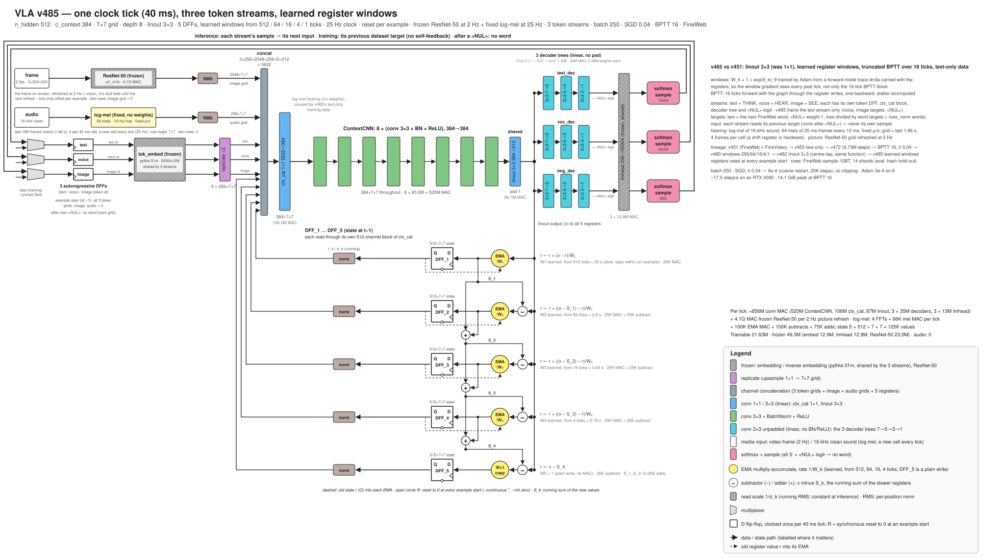

Silicon Perception Inc · open source
A recurrent CNN vision-language-action model
No attention, no positional encoding. The model's memory is a stack of 2-D register grids; every clock tick one small convolutional network reads the current token together with the registers and writes the registers back.
The target is a vision-language-action model on a single chip at 100 Hz or more, with no external components: no off-chip memory, every weight stored on the chip itself. A CNN makes that possible because it is parameter-efficient: the same small kernels run at every grid position and every tick, so a few million weights drive a state of hundreds of thousands of values.

How a tick works
- The current token's embedding is normalized and copied to every position of a 7 × 7 grid.
- That grid, the image and sound grids, and the five registers are concatenated and mixed by a 1 × 1 convolution.
- Eight 3 × 3 convolutions with BatchNorm and ReLU transform the result, and a 3 × 3 convolution projects it to register width.
- The registers are written as a cascade: each slow register moves 1/W of the way toward what the slower ones have not yet captured; the last holds the remainder, so the registers always sum to the new output. The windows W are learned: 530, 57, 15 and 3.8 ticks in the published model.
- A small tree of convolutions collapses the grid to one vector, and a frozen output layer gives the next token.
Results
The published model (run v485) on minimal-pair tests, scored the same way for every model: each sentence is read with no context, and the one with the lower total loss counts as the model's choice.
| Model | Size | BLiMP (grammar) | ComVE (common sense) |
|---|---|---|---|
| pythia-14m | 14 M | 69.7 | 64.7 |
| pythia-31m | 31 M | 71.1 | 66.9 |
| babyllama-10m-2024 | 10 M words | 70.0 | 63.7 |
| SmolLM2-135M | 135 M | 80.9 | 79.3 |
| VLA v485 | 21.6 M trained | 70.1 | 66.3 |
BLiMP: 1,005 pairs spread over its 67 paradigms. ComVE: 999 pairs. Held-out FineWeb: 4.527 nats/token.
Samples
From the prompt in bold, at the published step. Fluent, not factual:
My grandmother's recipe for apple pie starts with a very light blue color, just like every day. For your more minimal visit to a little pizza, you may as well try the recipes I used to bake … The best grilled salad is full of basil and spices.
When you plant a vegetable garden, the first thing to do is stick to your first name, which I purchased from the plant - which is one of my favorite plants in the country and the corresponding plant we have here.
Try it
git clone https://github.com/siliconperception/vla && cd vla
pip install -r requirements.txt
for p in "The colors of the rainbow are" \
"The best way to learn a new language is" \
"My grandmother's recipe for apple pie starts with" \
"When you plant a vegetable garden, the first thing to do is" \
"The history of the bicycle began in"; do
python vla.py --pretrained --generate --n 120 --prompt "$p" --device cuda
done
# prompt tuning: fit the starting registers (weights frozen) until the model predicts the prompt,
# then continue from them; prints the cold and the tuned continuation
python vla.py --pretrained --generate --prompt_tune 200 --n 120 --prompt "The colors of the rainbow are" --device cuda